🔀 目标与完成效果
在实践③中，我们要制作一张使用车站旁的「牵出线」对列车进行调车（折返）的地图。 列车到达车站后，先牵出到牵出线后改变方向，再回到另一条股道，作为本站始发列车出发——这是在车库或折返站经常看到的动作。
完成后，一列列车会依次完成以下4个动作。请先把这个完成效果记在脑中，再继续往下读。
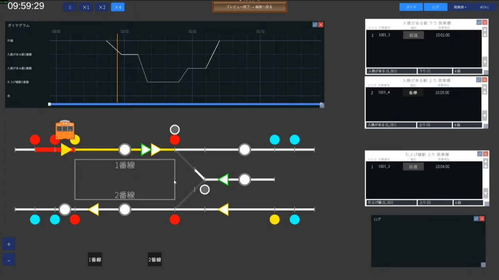
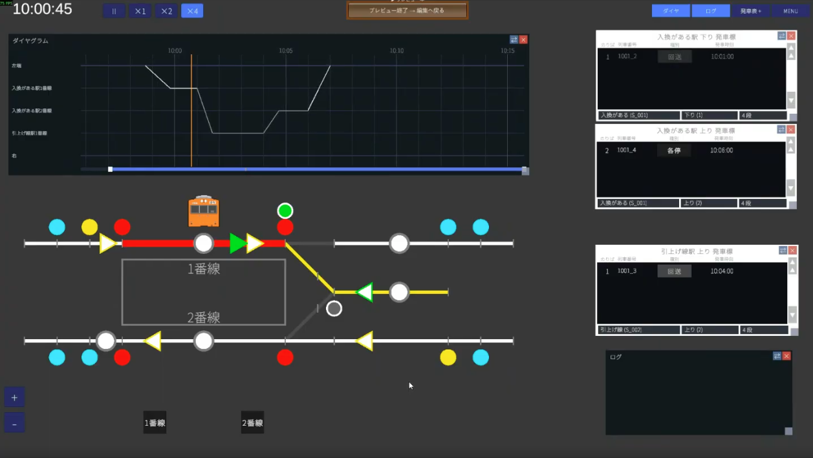
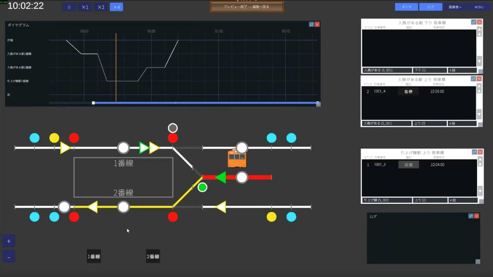
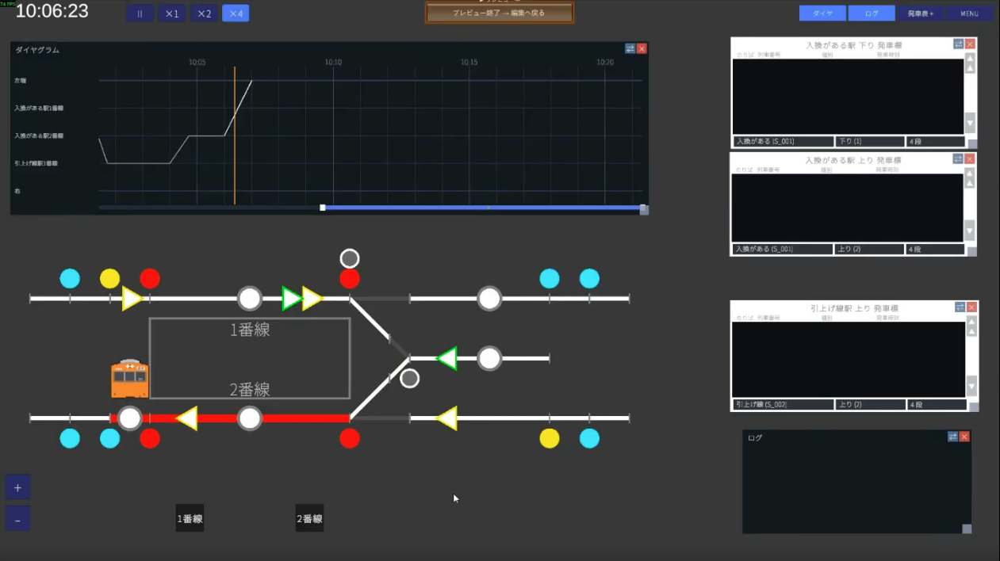
本教程可以新学到的内容
- 在一张地图上放置2个车站（把乘降的车站＋牵出线登记为不同的车站）
- 为什么要分开：一个路径组只能设置一组到发时刻这一限制
- 调车用起点控制杆（绿）的用法与编号方式
- 用敌对进路手动登记「不想同时排列的进路」
- 把路径组分割成4个，组建调车的一连串动作
- 在列车列表中用「创建并登记下一运用」连接3次，把到达→调车→折返出发合为一列
- 另外显示牵出线的发车显示屏
✏️ 设计图（1面2线＋牵出线）
本次的车站，是在被上下2条正线（复线）夹在中间的1面2线岛式站台上，加了一条向右延伸的牵出线的形态。 股道设为1股道（下行侧・到达）・2股道（上行侧・出发），牵出线是不设股道编号的尽头线路。
🏢 STEP1 公司（本次从简）
新建地图（例：地图名 入れ替えがある駅），从公司类别开始。本次以调车为主，所以公司相关部分保持最低限度，往下进行。
1-1. 列车车种只要「各站停车」和「回送」
调车中的列车作为回送运行，载客的区间则为各站停车。本次只要准备这2种车种即可（车种的自定义创建请参照实践②）。
1-2. 列车形式只要1种
文章中只准备1种车辆形式。作为示例，把通勤型・10节编组・全长200m（官方素材库的橙色）设为「1系」。步骤见公司编辑指南。
🛤 STEP2 配线（登记2个车站是关键）
画线路的步骤本身与实践①・②相同，所以快速带过。本次的重头戏是「登记2个车站」这一点。
2-1. 画线路（复线＋岛式＋牵出线）
在上下线（复线）之间画1面2线岛式站台，在其右侧画牵出线的尽头股道（尽头）。连接正线与牵出线的是Y字单开道岔。
道岔用常规设置（侧向45km/h・直向80km/h，长度约20m）即可。线路画好后，先预览一下确认形状。
2-2.（Lv3核心①）把车站与牵出线登记为「不同的车站」
因此，登记2个车站。
- ① 入れ替えがある駅 … 有人上下车的岛式站台车站（1股道・2股道）
- ② 牵出线 … 折返用的尽头。不设股道・站台
尝试创建第2个车站时，会显示提示文字。
——也就是说，如果想在车站和牵出线两处都设置时刻，就需要在车站处先把路径组分开（可以想象成从普通电车→回送电车的切换）。这就是实践③面向进阶用户的原因。对「仍要登记吗」请选「登记」继续。
2-3. 站台只设在客运车站
站台只放在乘降的一侧（入れ替えがある駅）。牵出线上不放站台。放好后保存。
2-4. 发车按钮的思路（牵出线不放置）
发车按钮是用来决定「是等发车信号后再发车／还是到点后自动发车」的东西。
- 有很多列车进入的车站：推荐放置发车按钮。当运行图紊乱时，可以防止「还不想发车却发车了」。
- 本次的牵出线：只有1条线，除非排列进路，列车无法向前行进。因此牵出线上不放发车按钮，到点后自动发车。
→ 详情见 配线编辑指南
🚦 STEP3 设备（调车用控制杆・6进路・敌对进路）
3-1.（Lv3核心②）使用调车用起点控制杆
本次首次使用调车用起点控制杆（绿）。起点控制杆用数字管理，把正线用和调车用的号段分开会更清晰易懂。
| 用途 | 方向 | 编号示例 |
|---|---|---|
| 正线用（黄） | 向右 | 1・2 |
| 正线用（黄） | 向左 | 11・12 |
| 调车用（绿） | 调车 | 21・22（用21号段分开） |
本次给1股道→牵出线的路线分配 21 号、给牵出线→2股道的路线分配 22 号调车用控制杆。终点控制杆照常用字母编号。
3-2. 需要的6条进路
正线用4条＋调车用2条，共6条。起点控制杆的轨道电路不计入经由，从其下一个到终点控制杆处登记为经由（复习见实践②）。
| 进路 | 含义 | 起点 | 终点 |
|---|---|---|---|
1A | 下行 → 到达1股道 | 1 | A（1股道） |
2B | 1股道 → 向下行出发 | 2 | B（下行正线） |
11D | 上行 → 到达2股道 | 11 | D（2股道） |
12E | 2股道 → 向上行出发 | 12 | E（上行正线） |
21C | 1股道 → 牵出线（调车） | 21（绿） | C（牵出线） |
22D | 牵出线 → 2股道（调车） | 22（绿） | D（2股道） |
3-3. 放置信号机
信号机方面，放置进站2架・出站2架・调车2架，以及站间防护的闭塞信号机。基本放置方法与实践①・②相同（根据进路和守护的轨道电路决定显示）。
3-4.（Lv3核心③）敌对进路 — 登记不想同时排列的进路
在这个车站，正线到达的 1A 与正线出发的 2B 可以同时排列（到达并出发的进路往往可以同时排列）。
另一方面，正线到达的 1A 与从那里进入牵出线的调车 21C，通常不想让它们同时排列。即使因为不共用轨道电路而不会被自动判定为敌对的情况下，也可以手动登记到「敌对进路」。
- 选择
1A的进路 - 在敌对进路中勾选
21C并保存 - 这样
1A与21C就无法同时排列了
1A 一侧登记 21C 后，21C 一侧也会自动登记 1A。只需设置一侧即可。另外，敌对进路终归是为了再现更真实的运用。即使不设置游戏也不会出错。只有在意的人设置即可。
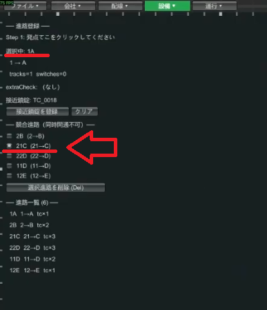
3-5. 发车按钮
发车按钮放在正线的各股道上。牵出线上不放（如2-4所述自动发车）。到此轨道全部完成后，先留一张截图吧。
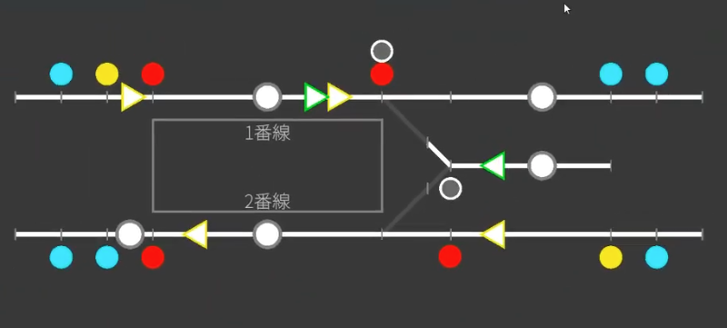
→ 详情见 设备编辑指南
📋 STEP4 运行（路径组4分割・折返连接）
这里是实践③的正题。把调车的一连串动作分成4个路径组制作，最后在列车列表中连成一列。
4-1.（Lv3核心④）为什么要把路径组分成4个
调车的动作，分成以下4个区间。
- 到达1股道
- 进入1股道 → 牵出线
- 进入牵出线 → 2股道
- 从2股道出发
4-2. 路径组① 到达1股道
- 路径组 ID（例
1番線到着），方向「右」 - 出现 TC 是最左端的轨道电路，出现时机为到达前（例：80秒前）
- 步骤：用进路
1A到达 → 在入れ替えがある駅（S001）停车 - 停车设为运用切换的「载客」。虽然是以回送驶出的车站，但有让乘客下车的作业，所以载客即可
- 停车秒数设为0秒即可（实际的停车在下一个路径组的步骤中设置）
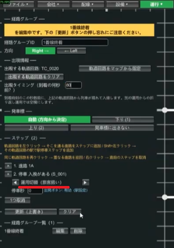
4-3. 路径组② 1股道 → 牵出线
- 路径组 ID（例
1番線→引上線），方向「右」 - 出现 TC 是前一个组最后停靠的地方＝1股道（继承）
- 出现时机留空（从前一个运用继承，所以不填）
- 步骤：在1股道停车（因为是继承，用「停车・载客」，秒数随意即可＝因为发车按钮有效） → 进路
21C→ 在牵出线选「折返（不载客）」
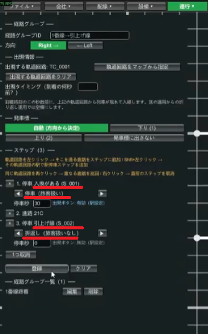
4-4. 路径组③ 牵出线 → 2股道
- 路径组 ID（例
引上線→2番線），方向为「左」（方向改变，注意别忘了选） - 出现 TC 是牵出线的轨道电路
- 步骤：在牵出线停车（不载客） → 进路
22D→ 在2股道停车（运用切换的「载客」）
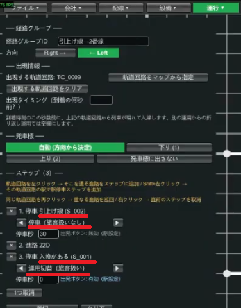
4-5. 路径组④ 2股道发车
- 路径组 ID（例
2番線発車），方向「左」 - 出现 TC 是2股道的轨道电路，出现时机留空（继承）
- 步骤：在2股道停车（载客） → 用进路
12E出发
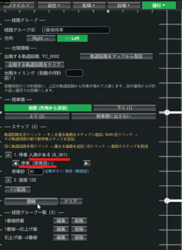
4-6.（Lv3核心⑤）列车列表 — 用「创建并登记下一运用」连接4个运用
把4个路径组，在列车列表中连成一列列车。制作好第一个运用后，重复按「创建并登记下一运用」按钮3次，把到达→调车→折返出发连接起来。
- 车次
1001（编号随意），车种各站停车，路径组1番線到着。到达时刻 10:00 - 「创建并登记下一运用」→
1001_2。车种回送，路径组1番線→引上線 - 再次「创建并登记下一运用」→
1001_3。车种回送，路径组引上線→2番線 - 再次「创建并登记下一运用」→
1001_4。车种各站停车，路径组2番線発車 - 保存。如果出现错误，按照提示修改时刻等
1001_2（1股道→牵出线）的时刻，是「入れ替えがある駅（S001）」的时刻，而不是牵出线的。人们容易想「这列车要去牵出线，所以是牵出线的时刻吧？」，但请填入栏中所写车站的时刻。注意别与前一个运用的时刻错位。
时刻示例（组织成前后运用相衔接）：
| 车次 | 车种 | 路径组 | 基准车站 | 时刻 |
|---|---|---|---|---|
1001 | 各站停车 | 1番線到着 | 入れ替えがある駅 | 10:00 到 |
1001_2 | 回送 | 1番線→引上線 | 入れ替えがある駅 | 10:00 到 / 10:01 发 |
1001_3 | 回送 | 引上線→2番線 | 牵出线 | 10:02 到 / 10:04 发 |
1001_4 | 各站停车 | 2番線発車 | 入れ替えがある駅 | 10:05 到 / 10:06 发 |
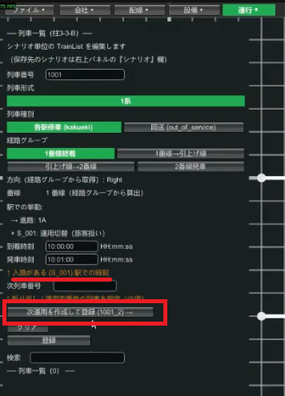
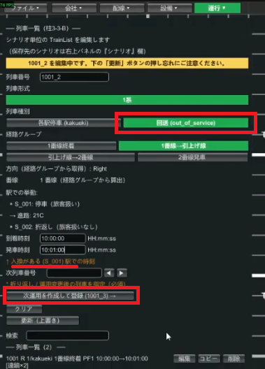
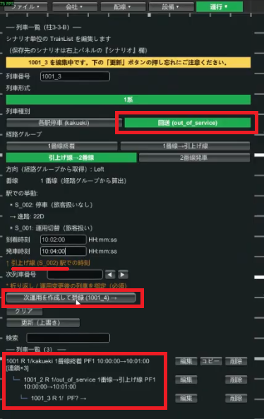
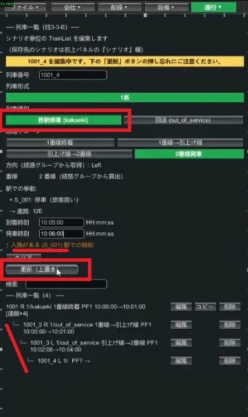
4-7. 用运行图与发车显示屏确认
设置运行图行（步骤与实践①・②相同）并保存。如果没有错误就进入预览。运行图上会清晰地画出从左端进入、在1股道停下，切换为回送（1001_2）前往牵出线，折返（1001_3・1001_4）后从2股道作为各站停车出发这样一条折返的线条。
也确认一下发车显示屏。站台的显示为回送 10:01 发，2股道（上行）是各站停车 10:06 发——这就是从牵出线返回的列车。
4-8. 也能显示牵出线的发车显示屏
再按一次「发车显示屏 +」按钮，就能添加发车显示屏。在下方的输入栏可以选择车站和方向，把车站设为 牵出线・方向设为上行，就能显示牵出线的发车时刻。
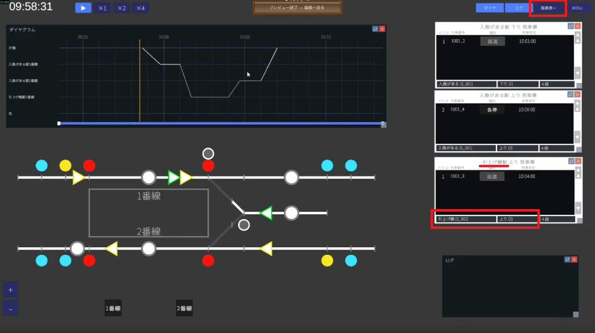
4-9. 运行确认
实际运行一下吧。
- 到达1股道 → 排列前往牵出线的进路，按下发车按钮后，列车便经由前往牵出线的进路进入牵出线
- 牵出线没有发车按钮，所以到发车时刻就会自动进入发车准备并发车
- 到达2股道后，排列从2股道出发的进路，照常按下发车按钮
- 作为各站停车、以本站始发出发，就成功了
🎉 完成！
辛苦了。你已经能够组建在一张地图上放置2个车站、使用牵出线进行调车（折返）这样更进一步的运用了。 实践③的重头戏是这3点：把车站分成两个的思路・路径组的4分割・用「创建并登记下一运用」进行连接。
运行不顺利时
- 无法设置牵出线的时刻：是否把牵出线登记为了另一个车站（是否有2个车站）
- 不折返／出发侧不出现：是否把路径组分成了4个、并在②中选了「折返」
- 时刻错位报错：各运用的时刻是否为「栏中所写车站」的时刻。是否与前一个运用相衔接
- 调车信号无法出现黄色条件：调车信号机没有黄色显示，因此无法设置（符合规格）
相关指南
- 实践② 复线车站折返 — 折返的基础（2个路径组）
- 实践① 单线会车 — 地图制作的基础
- 运行编辑 / 设备编辑 — 路径组・进路・信号的详情
- 术语集 — 敌对进路・调车信号等的确认